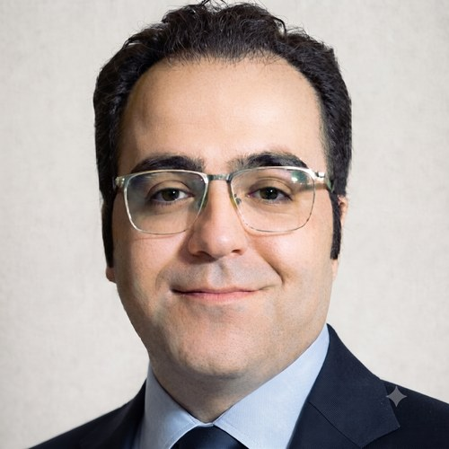

I trained first as an electrical engineer, then as a philosopher of science, and now work at the edge of computational psychiatry and human-centered AI. The path was not a plan — each stage changed the questions I was allowed to ask. Engineering taught me to think in signals and systems. Philosophy of science made me ask what counts as a good explanation, and what a computational model can and cannot tell us about a mind.
At the University of Milan, I work on how Bayesian and active inference frameworks can be used to understand psychiatric disorders, and on the EEG signal-processing methods that make those models testable against real data. I am looking for a fully funded PhD position, target start 2027, somewhere that treats engineering precision, philosophical depth, and clinical relevance as compatible demands rather than competing ones.